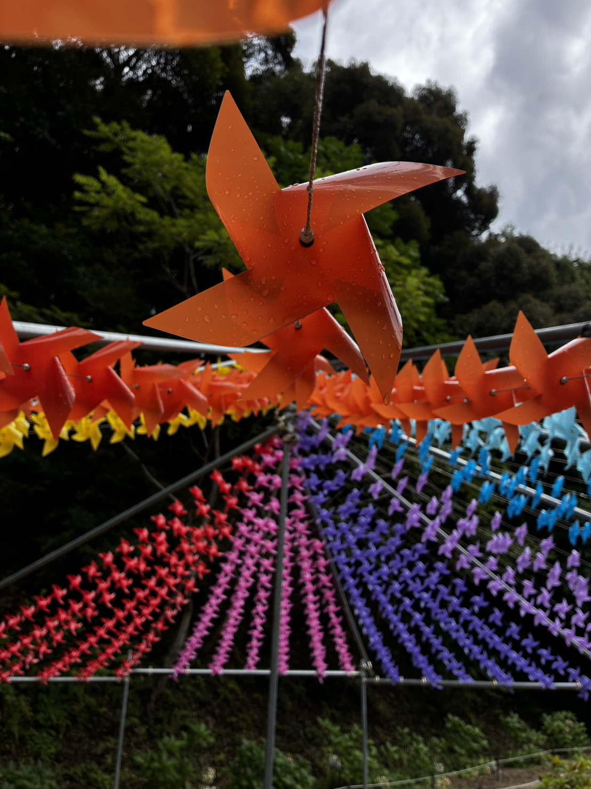
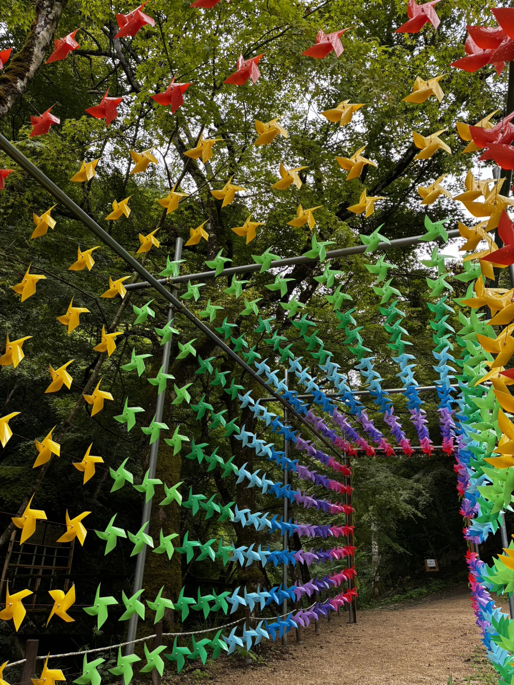
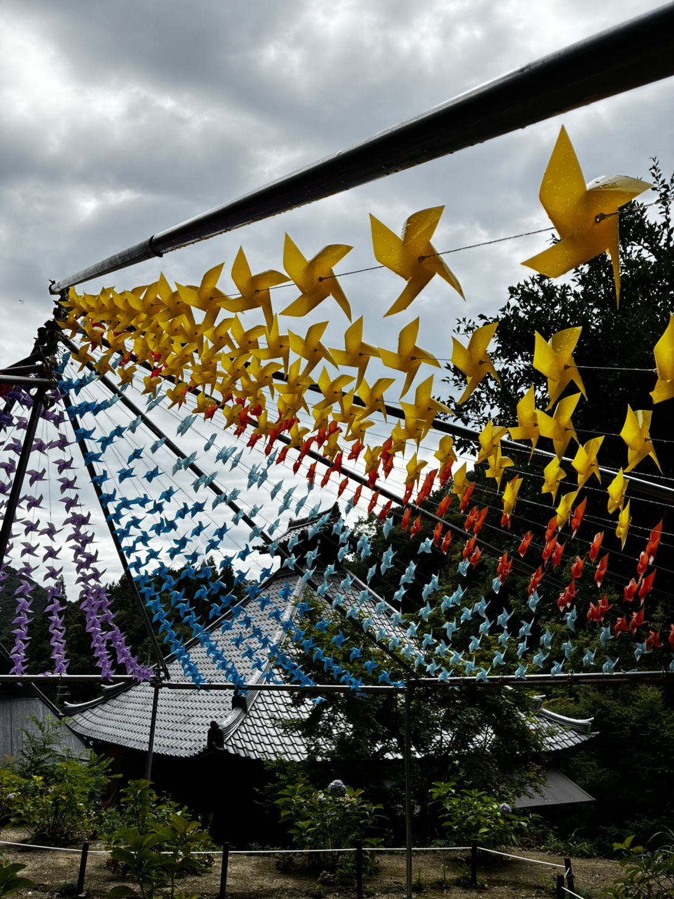
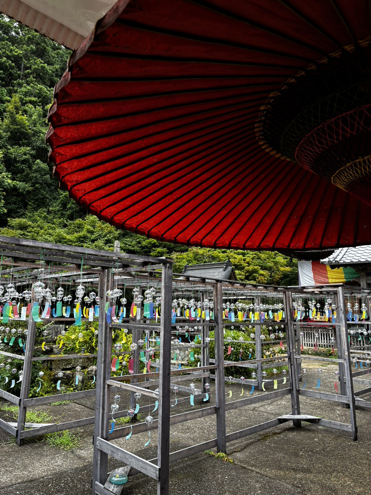
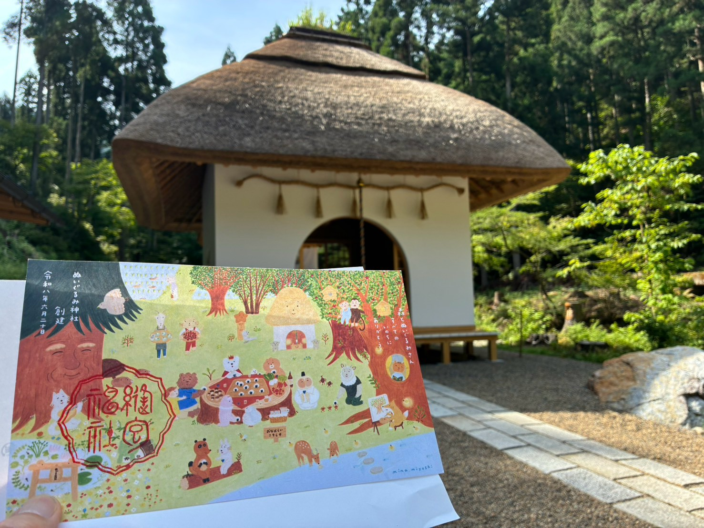
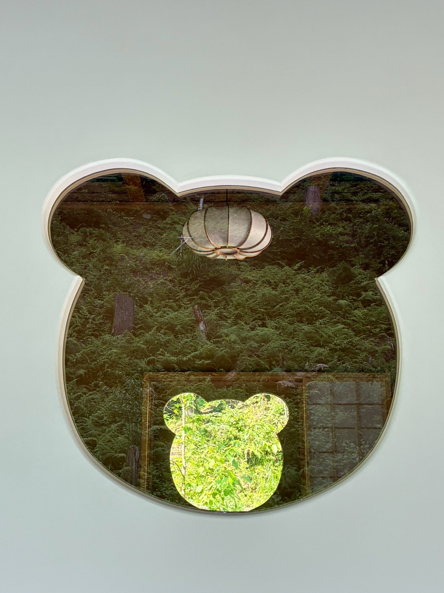
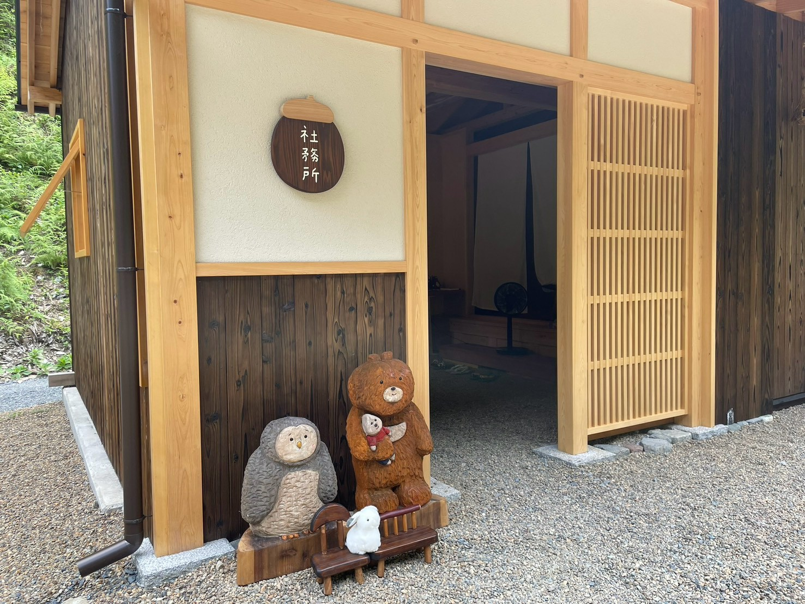
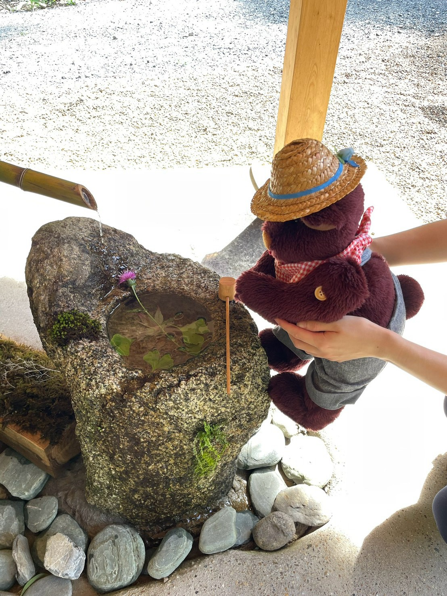

果たして需要はいかほどでしょうか。
ドライバーとともに行くツアーを現在企画中です。
7/30開催のツアーで「ドライバーのファンになった」という嬉しいお声を頂戴し、
あの時の乗務員と行くツアー！のようなものを企画しようとしています。
バスツアーではないので乗務員との距離の近いご案内も魅力のひとつになりえるのでは…
よりおもてなしの精神が試される重大企画です…！
皆様にお届けできるよう精一杯計画しております！
彩り豊かに、風に舞う風車
新たに販売を開始した「風・水・音に癒される 綾部納涼紀行」ツアーでお邪魔する東光院様に、上司が見学に訪れた際の写真が送られてきました。
ホームページに掲載している、格子窓の中で風車がくるくると回る情景も美しいのですが、ホームページではご紹介しきれていない素敵な風景が写っていましたので、皆様にもお裾分けを。
「風鈴まつり」の名のとおり、風鈴ももちろん美しいのですが、特に目を引いたのが色とりどりの風車の装飾です。
綾部の風に吹かれてカラカラと回る風車が、訪れる人に涼を感じさせてくれます。
そういえば、風車を目にする機会も、いつの間にか少なくなったな……。
そんなことをふと思いながら、少し物思いにふけってしまう、そんな素敵な写真でした。




生まれたばかりの可愛いが詰まったその名もぬいぐるみ神社
美山の地にできたばかりの神社があるらしい。
そんな話が私達のもとへ届きました。
いざ訪問してみるとなんとも可愛らしいご本殿に手水舎、ぬいたちが狛犬も勤めています。
さらにさらに窓もクマさん、屋根は洋風の茅葺、ぬいたち用のミニサイズの椅子や鳥居…。
担当者も仕事を忘れて思わず「可愛い」とこぼしてしまうほどでした。
お話を伺うと創建時には御分霊を遷す儀式もしっかりされた立派な神社とのこと。
神社が新しく創建されることがある、そんなことを知らずにいましたが、生まれたばかりの神社の姿に驚きを隠せずにいました。
もうすぐ1歳の誕生日を迎える可愛い境内で皆様のかわいいぬいちゃん達と一緒に過ごせるツアーがまもなく販売されます！




とても魅力的な施設でした
先日、伏見区にある「京町家文化空間シズハモ」を訪問いたしました。こちらの施設では、京都市指定の重要京町家ならではの空間で、茶道体験や写真撮影などを楽しむことができます。
今回、私自身も実際に茶道体験をさせていただきました。
室内は本格的な茶室となっており、歴史ある京町家ならではの落ち着いた雰囲気が広がっています。
静かな空間の中で、お茶の香りや季節のしつらえを感じながら、ゆったりとした時間を過ごすことができました。
また、本格的な茶道教室のように細かな作法を学ぶのではなく、スタッフの方が分かりやすく説明してくださるため、
難しい所作を気にすることなく、初めての方でも気軽に茶道文化を体験できます。
京都にはさまざまな文化体験がありますが、シズハモは「本格的でありながら、気軽に楽しめる」という点が魅力だと感じました。
さらに、茶道体験だけでなく、歴史ある京町家の空間そのものを楽しめることも、京都ならではの特別な体験につながると感じています。
現在、今回の体験を活かし、京都ならではの文化や空間を気軽に楽しんでいただけるツアーを企画中です。
多くのお客様に京都の魅力を感じていただけるツアーとなるよう、内容を検討してまいります。
時代劇の聖地巡礼！
プレスリリースが始まっている時代劇ツアーで訪れる場所を一つご紹介！
こちらの写真どこの写真かわかりますか…？
そう、大覚寺大沢池周辺の写真です。
水戸黄門、暴れん坊将軍、必殺仕事人など数々の有名時代劇に登場する大覚寺…。
以前刀剣ツアーでご一緒させて頂く機会があり、弊社のではないですがジャンボタクシーが明智門に引っかかってしまったことがあるというちょっと怖い話を伺ったことがあります。
懐かしいなと思うと同時にまた弊社ツアーでご一緒させて頂ける機会があったことを嬉しく思います。
神秘を肌で感じるパワースポット
知る人ぞ知る、まさに迷い込んでしまったかのような道を進み、鉄の門を開けてたどり着いた神秘的な空間。
賀茂神社はそんな杉林のただなかに静かにたたずんでいました。
そびえる石の鳥居とまっすぐに続く石段はところどころ苔むしています。
途中担当者が微かに動く影を見つけると石段を横切っていく小さなサワガニとも遭遇しました。
同じ世界であるはずなのに市内中心部からはまさに切り離されたかのような不思議な体験が出来る今となっては貴重な場所。
皆様にご案内できるようなツアーの種にならないか、現在模索中です！
暑すぎる…
7月初旬までは「今年は涼しいかも」なんて期待をしておりましたが、いきなり気温35度を超える暑い日が続き、祇園祭の前祭の日程は気温40度を超えるなんてニュースまで飛び込んできています。
このままでは暑さに負けてしまいそう…皆様になんとか涼を提供したい、そんな思いで新機能実装しました！
なんと今まで文字+写真だった本ページですが、一部音声をお届けできるようになりました！
写真と音声で今回はとある場所の静かなせせらぎをお届けします。
京都市内と比較しても2～3℃も低い避暑地からの情景とともに皆様の耳から涼しくしていけたらと思います。
ちなみに弊社スタッフが現地で録音した音声ですので、途中車両扉の開閉音が入っています…。
詳細な訪問の記録はまた後日お届けいたします！
今は昔
整えられた石畳の参道を進んだ先に構えられた山國神社。
大堰川のせせらぎも心地よく、京都の自然200選に選ばれたのも納得の自然を感じます。
石鳥居を潜ったすぐ右手側に「神饌所」の文字を見つけ思わず撮影。
担当者は実は大学生の頃とある老舗の鰻屋さんで1年ほどアルバイトをしていました。
その老舗さんは本店のある地域の神社に毎年お正月に神饌を供えているという話を聞いたことがあり、謎の親近感で撮影しました。
こういった場所って中を覗いてはいけないものと思いつついけないと言われるとより一層中が見たくなり、限定公開してもらえたりしないのかな…とついつい考えてしまいました。
紫陽花、良いですよね！
先週末宝泉寺の花宝苑にお邪魔してきました。
紫陽花の本数だけでなく種類も豊富で紫陽花好きな担当者は心躍って写真を撮って、撮って、撮って…。
あっという間に時間が過ぎてしまいました。
周辺は限界集落になってしまっているという事もあってか15000株も贅沢に植えられた紫陽花をほぼ貸切状態で観賞することが可能でした。
ぽつぽつと傘をたたく小雨も風情があってこれがまた大変良かったです。
来年にはこちらを訪問できるツアーを企画できればいいな、と思っています。
バックヤードツアー
時代劇で良く知られる太秦映画村様より写真を頂きました。
ツアー販売ホームページには掲載できなかったものの普段見れない貴重なお写真を頂いたのでせっかくだからとこちらで公開！
手前の岩もつくりもののの張りぼてとのことですが本物にしか見えなくて驚かされてしまいました。
普段見れない景色！皆様ツアー参加はいかがでしょうか？
旅とも手帳手引
日々このホームページとにらめっこを繰り返しているとついつい見慣れてしまって皆様にホームページの使い方をお伝えできていない事を忘れておりました。
皆様にご覧いただきやすいように少しずつ改善を加えていますが、是非ごゆっくりご覧ください。
・造成日記
スタッフが日々営業に赴いたご報告や小さな発見をお伝えしていきます。
また、小さな発見から少しずつツアーとして出来上がっていく様子もお伝えしていく予定です。
ツアーレポートには当日の様子も掲載していきますのでお楽しみに！
・季節・テーマ
京都の魅力は王道だけじゃない！をテーマに季節それぞれの魅力をドライバーまたはスタッフ撮影の写真の数々でご紹介していきます。
少しずつコンテンツが増えていきますので時々覗いてみて下さい。
・過去のツアー
MKトラベルで今まで催行したツアーを掲載しています。
もう一度やりたいツアーも沢山あります！再販売をお待ちください！
・催行カレンダー
現在販売されているツアーの予定、催行状況が一目でわかる！？カレンダーです。
日にちタップすると猫の肉球が出てくるのがホームページ作成者のこだわりです。
ちなみに犬派です（？）
・直近の催行状況
これから催行するツアーのうち近い日程の5つのツアーが表示されます。
・募集中のツアー
タクシーツアーの一覧が掲載されています。
・当日の様子
造成日記のツアーレポートの全てを記載しています。
・SNS
弊社の各SNSへのリンク集です。
・マイページ
既にご予約を頂いたツアーの取消・変更などが行えます。
中の人2号です
はじめまして！
平素よりMKタクシーをご利用いただきありがとうございます。
大好評(？)だったホテル様向けのHPでも一緒にやってきた上司と再び、このHPを担当させて頂きます。
いつもお世話になっているお客様だけに少しだけ特別な情報をお届けしますので、どうぞよろしくお願いいたします！
仲間が増えました
ホームページ更新作業にあたり一人では心もとないということで更新担当を1人新たに勧誘しました。
名前はRYUTARO。部署のエンターテイナーです。
より楽しい記事を展開してくれると思います！
担当よりご挨拶
はじめまして！
MKトラベルをご利用いただいたみなさまにもっとDeepな京都を！
そんな思いで新たにホームページがスタートしました。
初めてのことだらけ、ぴかぴかのたまごからスタートします！
こんなことがしたいな、という企画のたまごからひよこの成長記録のように新しい企画ツアーの進捗状況や当日のツアーの魅力をドライバーからおすそ分けしてもらったり。
いろいろなツアーの様子をみなさまにお届けしたいと思っています。
これからどうぞよろしくお願いします！
あいにくの天気の中
企画のたまご「美山のとある場所」へ行ってまいりました。
というわけで今回お邪魔したのは日本最古の農家型住宅「石田家住宅」。
この日はアポをとっていた保存会の代表の方が建物の中のや家具のことなど案内してくださいました。
時代を感じる家具に「見たことがある」とか「実際に使った事ある」とか果ては今年入社のスタッフが「そもそも知らない」とか！
お伺いしたメンバー内でジェネレーションギャップでかなり話が盛り上がりました。
歴史ロマンを感じる茅葺屋根住宅。
もう間もなくツアーとして公開となります！
美山のとある場所より
まだ知られていない秘境を求めて。
上司から送信されてきたのは見たことのないかやぶき屋根の住宅。
なになに日本最古の農家型住宅…？重要文化財？！
見覚えのあるかやぶき屋根よりもさらに低いような…
これは気になる…果たしてツアーに出来るでしょうか。


.jpg)